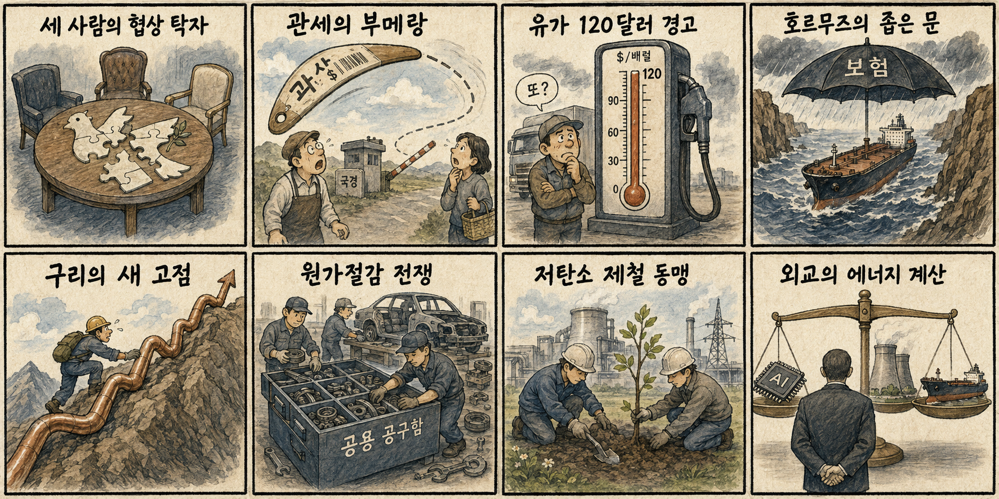
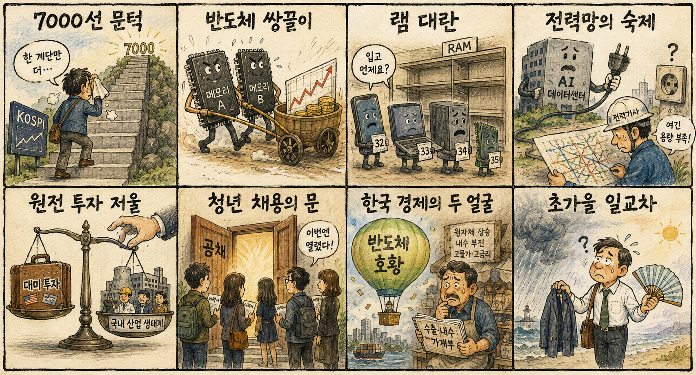

01
마벨 · 211.66→223.55달러 · +5.62%
내용요약 시가 대비 5.62% 상승해 반도체 종목 내 강한 상대 흐름을 보였습니다.
예상여파 국내 HBM·반도체 설계와 데이터센터 연결 종목의 심리를 지지할 수 있지만 월요일 갭 추격은 피해야 합니다.
MORNING_BRIEFING_20260908
작성 시각: 2026-09-08 06:42 KST · 직전 미국 정규장과 2026-09-08 KST 당일 공개 기사 기준
미국 증시는 9월 7일 노동절로 휴장해 새 종가가 없습니다. 따라서 직전 정규장인 9월 4일의 다우 -0.51%, S&P 500 -0.38%, 나스닥 -0.29%를 기준점으로 유지합니다. 국내에서는 9월 7일 KOSPI가 +4.61% 급등해 7,000선에 근접했고 반도체·전력 인프라가 강세를 주도했습니다. 오늘은 미국 가격 신호가 비어 있는 만큼 전일 급등의 과열 해소, 국제유가와 외국인 선물 수급이 방향을 가를 전망입니다.
| 지수 | 종가 | 등락률 | 한국 증시 시사점 |
|---|---|---|---|
| 다우존스 | 53,414.25 | -0.51% | 9월 7일 미국 휴장 · 9월 4일 값 유지 |
| S&P 500 | 7,718.60 | -0.38% | 9월 7일 미국 휴장 · 9월 4일 값 유지 |
| 나스닥 종합 | 26,506.99 | -0.29% | 9월 7일 미국 휴장 · 9월 4일 값 유지 |
새 가격 신호가 없어 9월 4일 종가가 기준점입니다.
전일 +4.61% 급등 뒤 추격보다 시초가 안착과 수급 확인이 우선입니다.
지정학과 관세 우려가 에너지·산업금속 원가를 밀어 올립니다.
과열 제외와 필수 검증 문턱을 모두 통과한 후보가 없습니다.
9월 7일 보고서는 30건 이상 보정 표본과 필수 수급·컨센서스 검증 부족으로 공식 추천을 내지 않았습니다. 게시 당시 판단은 그대로 유지되며 사후 종목을 추가하지 않습니다.
| 시장 | 종가 | 등락률 | 기준 |
|---|---|---|---|
| KOSPI | 6,995.39 | +4.61% | 9월 7일 · 시가 대비 +1.22% |
| KOSDAQ | 822.19 | +1.07% | 9월 7일 · 시가 대비 -0.09% |
| 다우존스 | 53,414.25 | -0.51% | 미국 9월 4일 정규장 · 9월 7일 휴장 |
| S&P 500 | 7,718.60 | -0.38% | 미국 9월 4일 정규장 · 9월 7일 휴장 |
| 나스닥 종합 | 26,506.99 | -0.29% | 미국 9월 4일 정규장 · 9월 7일 휴장 |
9월 7일 SK하이닉스 +8.26%, 삼성전자 +5.68%로 지수 상승을 주도했습니다.
두산에너빌리티 +10.98%와 AI 전력 수요 보도가 정책·수주 기대를 키웠습니다.
유가 120달러 경고와 호르무즈 긴장이 연료·원재료 비용 부담을 높입니다.
KOSPI 급등 직후라 갭 상승 종목은 손익비가 나빠질 수 있습니다.
내용요약 시가 대비 5.62% 상승해 반도체 종목 내 강한 상대 흐름을 보였습니다.
예상여파 국내 HBM·반도체 설계와 데이터센터 연결 종목의 심리를 지지할 수 있지만 월요일 갭 추격은 피해야 합니다.
내용요약 시가 대비 4.66% 오르며 메모리 업종의 강세를 이끌었습니다.
예상여파 삼성전자·SK하이닉스 투자심리에 긍정적 연결고리지만 미국 고용발 금리 부담과 함께 판단해야 합니다.
내용요약 시가 대비 3.62% 상승해 지수 하락장에서 상대 강세를 기록했습니다.
예상여파 미국 반도체 생산·정책 기대가 이어질 경우 국내 장비·소재주는 수혜와 경쟁 압력을 동시에 받을 수 있습니다.
내용요약 시가 대비 3.75% 올라 AI 서버 수요 기대가 유지됐습니다.
예상여파 데이터센터 전력·냉각·기판 수요 심리를 지지하지만 개별 기업 변동성이 높아 추격 위험이 큽니다.
내용요약 시가 대비 4.77% 하락해 대형 성장주 가운데 뚜렷한 약세였습니다.
예상여파 금리 우려가 커질 때 장기 성장 기대에 의존하는 고평가 플랫폼주의 할인율 부담이 확대될 수 있습니다.
미국 노동절 휴장으로 새 방향 신호가 없는 가운데 국내는 전일 KOSPI +4.61%, KOSDAQ +1.07% 급등의 후속 흐름을 스스로 소화해야 합니다. 반도체와 전력 인프라의 장기 수요는 우호적이지만 단기 과열, 국제유가·구리 상승과 캐나다 보복관세 이슈가 부담입니다. 개장 직후 외국인 선물과 삼성전자·SK하이닉스의 시초가 지지, KOSPI 7,000선 돌파 후 안착 여부를 확인하고 갭 추격은 피합니다.
오늘은 추천 없음 — 현금 관망
전일까지의 외국인·기관 수급, 컨센서스 변화, 30건 이상 유사 조건 확률 보정과 예상 손익비 1.5 이상을 동시에 검증한 국내 종목이 없습니다. 장전 시가도 아직 형성되지 않아 점수와 확률을 임의로 만들지 않습니다.
관심 연결종목 대형 메모리, AI 데이터센터 전력·냉각, 원화 강세 수혜 업종은 관찰 대상일 뿐 매수 추천이 아닙니다. 장전 호재로 과도한 갭이 발생하면 추격매수 금지입니다.
KOSPI 7,000선과 대형 반도체의 시초가 안착, 외국인 선물을 확인합니다.
AI·원전 협력과 호르무즈 논의가 계약·해상안보 조치로 구체화되는지 봅니다.
원가 상승이 정유·전력기기와 운송·화학의 업종 차별화를 키우는지 점검합니다.
특사 발언이 실제 일정과 휴전 조건의 합의로 이어지는지 확인합니다.
핵심 요약: AI의 병목이 HBM에서 CPU·패키징·소프트웨어와 전력망으로 넓어지고 있습니다. 반도체 가격 상승의 수혜와 완제품 비용 부담, 해외 전력 인프라 투자의 상업성을 함께 봐야 합니다.
내용요약 AI 데이터센터의 전력 수요가 폭증하면서 단순 원전 테마보다 송배전, 전력기기와 효율화 설비의 실제 수혜를 따져야 한다는 당일 분석입니다.
예상여파 발전원 확대만으로는 계통 병목이 풀리지 않으므로 수주잔고와 납기, 밸류에이션을 함께 검증해야 합니다.
내용요약 K-반도체가 메모리를 넘어 CPU와 시스템 병목을 해결하는 풀스택 설계 역량을 확보해야 한다는 당일 기획입니다.
예상여파 칩렛·패키징·소프트웨어 최적화 능력이 고객 락인과 부가가치를 좌우해 국내 생태계의 투자 방향이 넓어질 수 있습니다.
내용요약 HBM4 경쟁에서 삼성전자와 SK하이닉스의 기술·양산 전망을 두고 목표가 시각이 엇갈린다는 당일 보도입니다.
예상여파 높은 기대가 주가에 반영된 만큼 고객 인증과 수율, 공급계약의 실제 진척이 종목별 차별화를 키울 수 있습니다.
내용요약 AI 전력 수요가 급증한 미국 텍사스에 국내 자금이 첫 투자를 집행했다는 당일 보도입니다.
예상여파 데이터센터 전력 인프라의 해외 투자 기회가 커지지만 전력가격, 가동률과 환율을 포함한 상업성 검증이 필요합니다.
내용요약 유럽 가전전시회가 AI와 로봇을 차세대 생활가전의 핵심 청사진으로 제시하며 막을 내렸다는 당일 보도입니다.
예상여파 온디바이스 AI와 로봇 서비스가 제품 교체 수요를 만들 수 있지만 개인정보 보호와 가격 수용성이 보급 속도를 가릅니다.
핵심 요약: 러·우 3자회담에는 진전 신호가 나왔지만 북미 보복관세와 중동 공급 불안이 교역비용을 높이고 있습니다. 유가와 구리의 동반 상승은 에너지·소재 수혜와 제조업 원가 부담을 동시에 키웁니다.
내용요약 미국 특사가 러시아와 우크라이나 방문 뒤 3자회담 조율에서 실질적 진전이 있었다고 밝힌 당일 보도입니다.
예상여파 회담 일정과 휴전 조건이 구체화되면 유럽 안보와 에너지·곡물 운송의 위험 프리미엄이 낮아질 수 있습니다.
내용요약 캐나다가 미국산 수입품에 최고 50%의 보복 관세를 부과할 가능성이 거론된 당일 보도입니다.
예상여파 북미 자동차·항공·원자재 공급망의 교역비용이 높아져 소비자 가격과 기업 투자계획에 부담이 될 수 있습니다.
내용요약 골드만삭스가 지정학적 공급 차질을 근거로 국제유가 120달러 가능성을 다시 경고했다는 당일 보도입니다.
예상여파 유가 상승은 정유·에너지에는 우호적일 수 있지만 항공·운송·화학과 물가, 금리 경로에는 부담입니다.
내용요약 관세와 공급 불안 우려 속 구리 가격이 톤당 1만4533달러로 사상 최고치를 기록했다는 당일 보도입니다.
예상여파 전력망·데이터센터 투자 수요와 맞물려 광산·제련에는 힘이 되지만 제조업 원가 압력을 높일 수 있습니다.
내용요약 현대제철과 포스코가 미국에서 저탄소 제철소 건설에 협력해 관세 장벽에 대응한다는 당일 보도입니다.
예상여파 현지 생산은 통상 위험을 낮출 수 있으나 대규모 투자비와 가동률, 국내 생산 생태계 영향을 함께 봐야 합니다.

핵심 요약: 반도체 호황과 대기업 공채, 외국인 순매수는 긍정적이지만 산업 편중과 IT 완제품 원가 상승이 그늘입니다. 단기 급등 뒤 수급 지속성과 큰 일교차·동해안 비도 함께 챙깁니다.
내용요약 삼성 계열 19개사가 하반기 공개채용을 시작해 청년 고용난 완화의 마중물 역할을 기대한다는 당일 보도입니다.
예상여파 대기업 채용 확대가 협력사와 소비심리에 긍정적이지만 직무별 선발 규모와 실제 고용 지속성을 확인해야 합니다.
내용요약 반도체 호황이 한국 경제의 수치를 끌어올리는 이면에 내수와 산업 편중 위험이 남아 있다는 당일 분석입니다.
예상여파 수출 증가가 가계소득과 투자로 확산되지 않으면 지표와 체감경기의 간극이 이어질 수 있습니다.
내용요약 AI 서버가 메모리 공급을 흡수하면서 스마트폰과 PC용 램 가격·수급에도 압력이 번지고 있다는 당일 보도입니다.
예상여파 메모리 업체 실적에는 우호적이지만 완제품 원가 상승과 소비자 가격 인상은 IT 수요를 제약할 수 있습니다.
내용요약 원화 강세와 함께 외국인이 최근 사흘 동안 코스피에서 4조7천억원을 순매수했다는 당일 보도입니다.
예상여파 환율 안정과 대형 반도체 수급은 지수에 우호적이지만 단기 급등 뒤 선물·현물 동반 매수가 이어지는지 확인해야 합니다.
내용요약 오늘 아침은 선선하지만 낮 기온은 30도 안팎까지 오르고 동해안과 경북 산지에는 비가 예보됐습니다.
예상여파 큰 일교차에 대비해 얇은 겉옷을 챙기고 비·강풍 지역은 이동과 시설물 안전에 유의해야 합니다.
